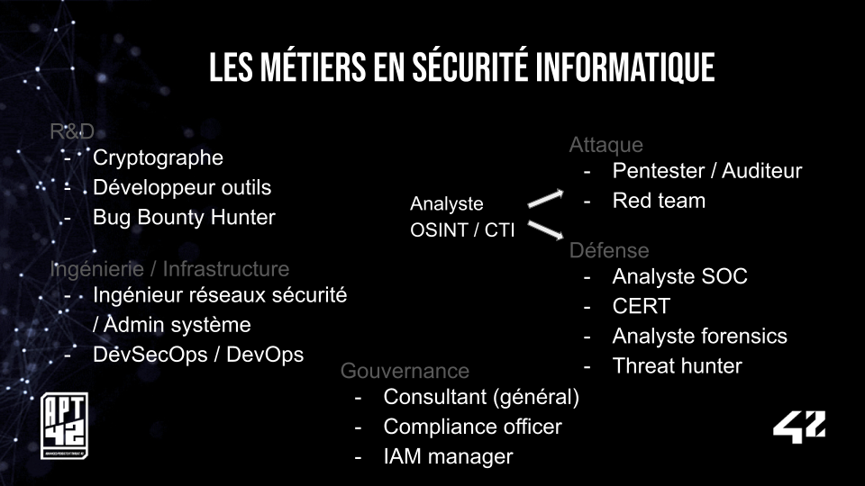

Le 27 Juin 2024 s'est tenu un atelier CV / Jobs sur le Discord d'APT42. Et chose promise, chose due, nous vous proposons de clarifier différentes familles de métiers dans le domaine de la cybersécurité.
Retrouvez également des conseils et ressources utiles pour votre recherche d'emploi en fin d'article.
Sommaire
Fiches métiers

Cliquez sur chacune des sections/métiers désirés pour les développer !
🔬 Recherche et Développement
Bug Bounty Hunter
Définition
Le/La Bug Bounty Hunter est une personne qui va chercher des bugs au sein d'un programme ou d'une application après avoir souscrit à un programme de recherche de ces bugs sur un site dédié à cela (HackerOne, Google Bug Hunters etc.).
Ce programme de recherche de bug établit en général un scope de recherche. Si un bug est trouvé, l'hunter va écrire un rapport qui va détailler en quoi il consiste et éventuellement mettre en place une preuve de concept (PoC). Pour finir, selon une grille définie en amont, l'équipe en charge du suivi de l'application ou du programme informatique, va donner - ou pas - une récompense selon la criticité du bug trouvé.
Notons que ce métier en France n'est pas vraiment reconnu comme tel : il s'agit le plus souvent de personnes qui travaillent sous le régime de la micro-entreprise, avec toutes les galères que peut occasionner le vide juridique entourant cette pratique. Néanmoins, une timide reconnaissance du bug hunting s'est installée comme en témoigne le récent programme de Bug Bounty pour FranceConnect.
Bon à savoir
Le domaine de recherche est vaste. Selon les programmes proposés par les différents sites, ce peut être aussi bien du web sur des scopes très larges, que de la recherche de bug au sein du kernel Linux.
Pour le cas français, des communautés existent pour aider sur l'aspect administratif.
Compétences
Il n'y a pas d'études en tant que telles pour être Bug Bounty Hunter, sauf dans quelques écoles privées spécialisées en cybersécurité. Cependant, il y a évidemment des compétences et connaissances requises, et qui sont directement liées au domaine de recherche.
Et à 42 ?
42 ne propose pas de devenir Bug bounty Hunter. Cependant, elle permet d'acquérir de nombreuses compétences (en programmation, sécurité etc.) qui peuvent aider à faire ce métier.
Liens
HackerOne
YesWeHack
Bug bounty et aspect légal.
Cryptologue
Définition
La cryptologie regroupe en fait deux sous-domaines : la cryptographie d'un côté, qui vise à mettre en place des protocoles de chiffrement, et la cryptanalyse, qui vise à casser ces protocoles.
Le/La cryptologue est la personne qui est chargée d'établir, tester, étudier et développer des procédés de chiffrements utilisés sur différents terminaux de communication (aussi bien sur des distributeurs automatiques de billets que sur des communications satellitaires) ou non encore utilisés — par exemple dans le but d'établir de nouvelles spécifications.
Ce métier est principalement orienté vers la recherche et le développement, avec une très forte composante mathématique : les protocoles de chiffrement sont toujours apriori un ensemble de fonctions mathématiques diverses avant d'être implémentés de façon logicielle ou hardware.
Bon à savoir
Chiffrer un message vise à rendre ce dernier incompréhensible pour une personne ne disposant pas de la clé pour le lire.
Déchiffrer vise à rendre en clair un message chiffré à l'aide d'une clé.
Le/la Cryptographe est la personne qui crée des protocoles de chiffrements des messages.
Le/La Cryptanalyste est la personnes qui analyse les protocoles de chiffrement du cryptographe dans le but de les casser par divers moyens.
La Cryptographie symétrique est un type de chiffrement à une clé, qui va donc chiffrer et déchiffrer le message.
La Cryptographie asymétrique est un type de chiffrement à deux clés — une clé publique et une clé privée —, qui visent respectivement à chiffrer et déchiffrer un message.
Compétences
Compétences excellentes en mathématiques et informatiques.
Et à 42 ?
Si 42 en tant que telle ne permet pas devenir sans études préalables ni cryptographe ni cryptanalyste, elle propose néanmoins différents projets qui initient aux protocoles de hashage (MD5, SHA256) et de chiffrement (DES, RSA).
Liens
La crypto joue des codes, sur La Science, CQFD
Les métiers de cryptographe et cryptanalyste expliqués
Développeur·euse d'outils
Définition
Le développeur ou la développeuse d'outils a pour objectif de soutenir d'autres équipes au sein de sa boîte telles que l'équipe pentest ou réponse à incidents. Ainsi, son rôle consiste à répondre à leurs besoins en développant des scripts, des API, des interfaces, des preuves de concept (PoC), des plugins et plus encore.
Bon à savoir
Python vous sera très utile.
Les autres langages qui reviennent souvent : JavaScript et Go (majoritairement pour le web comme le scraping), ou C/C++ voire Rust.
Ce poste est aussi parfois appelé "Développeur·euse R&D" (Recherche & Développement).
Compétences
Des compétences en développement web ou en bas niveau selon la spécialisation. Bonus : des bases en pentest web et en réseau.
Et à 42 ?
42 vous prépare très bien à ce métier. En parallèle du tronc commun ou une fois validé, nous vous recommandons d'apprendre Python et de vous parfaire sur JavaScript/TypeScript.
Liens
Web scraping
Reverse Engineer
Définition
Le/La Reverse Engineer — ou aussi reverser — (ingénieur·e en rétro-ingénierie) analyse les logiciels ou le code pour comprendre leur fonctionnement interne et identifier des vulnérabilités ou des mécanismes de protection. Ce travail est crucial pour la découverte de failles de sécurité et la recherche en cybersécurité.
Bon à savoir
Analyse souvent des logiciels malveillants (malwares).
Compétences
Expertise en décompilation et analyse de code, connaissances en architecture logicielle, compétences en programmation et systèmes d'exploitation.
Et à 42 ?
Vous trouverez quelques projets d'introduction à l'exploitation de binaires après le tronc commun (cf. liste dans les liens ci-dessous) mais vous devrez creuser et approfondir par vous-même.
Liens
Introduction au reverse
Vidéo d'une ancienne conférence à 42 sur une analyse de malware
Liste des projets sécurité à 42
⚙️ Ingénierie - Infrastructure
DevSecOps / DevOps
Définition
Ce sont deux métiers similaires. Le DevOps est une pratique pour les produits dits "SaaS" : Sofware as a service, c'est à dire des applications informatiques dont les fonctionnalités sont disponibles sur le réseau internet par le biais du "cloud computing". Une personne "DevOps" est une personne qui a des compétences aussi bien en programmation qu'en administration système/réseau. Elle se charge du cycle de vie entier d'une application, de sa conception à sa maintenance. DevSecOps est en réalité une variante de la pratique du DevOps, en intégrant l'aspect sécurité tout au long du cycle de vie sus-mentionné.
Compétences
Des compétences en programmation, en administration système et réseau, en sécurité informatique. Une appétence pour des logiciels d'automatisation et d'orchestration (ansible, kubernetes etc..) est vraiment requise.
Et à 42 ?
A 42, deux projets sont liés à ces pratiques (en mettant de côté les aspects programmation et administration système/réseaux) : cloud-1 (pour découvrir ansible), IOT (pour apprendre les bases de Kubernetes, et les méthodes du CI/CD).
Liens
DevOps / DevSecOps
Définitions des "SaaS"
Pour les curieux·ses : Les Ransomware as a Service
Définition du "Cloud"
Définition de "CI/CD"
Ingénieur·e Réseau, Système et Sécurité
Définition
Il s'agit d'un personne en charge du bon fonctionnement d'un système d'information (SI), de sa sécurité et ses perfomances en mettant en place la politique de sécurité déterminée en amont. Elle veille à protéger le SI des attaques extérieures en mettant en place des outils de détections, des règles anti-intrusion, en mettant à jour les différents outils informatiques du SI en lien avec les différentes équipes qui composent l'aspect sécurité d'une entreprise.
Bon à savoir
C'est un métier aux compétences transverses, aussi bien sur l'aspect défensif — le plus évident — qu'offensif, dans la mesure où cette personne doit non seulement détecter mais aussi comprendre comment un SI peut être attaqué, par exemple avec l'aide d'audits de sécurité internes effectués par des équipes spécialisées.
Compétences
Forte compétences en réseaux, excellentes connaissances des systèmes d'exploitation : selon l'entreprise, Unix/Linux et/ou Windows, notamment le composant Windows Active Directory.
Et à 42 ?
42 propose de nombreux projets en lien avec l'administration des systèmes informatiques, que ce soit sur l'aspect purement système et/ou réseau (Born to be root, BADASS...), principalement sur des OS type Linux. Prochainement, de nouveaux projets concernant l'administration d'un système Windows devraient arriver.
🔒 Gouvernance
Compliance Officer
Définition
Le/La Compliance Officer veille à ce que les entreprises respectent les régulations et les normes en matière de sécurité des données et de protection de la vie privée. Il est responsable de l'élaboration et du suivi des politiques de conformité et de sécurité.
Compétences
Connaissance des réglementations, capacité à élaborer des politiques, compétences en gestion de projets et en communication.
Et à 42 ?
42 ne forme pas à ce métier.
Consultant (général)
Définition
Bon à savoir
Ma liste.
Compétences
Et à 42 ?
Liens
Mon Lien
IAM Manager
Définition
L'IAM (Identity and Access Management) manager est responsable de la gestion des identités et des accès des utilisateurs dans une organisation. Il/Elle veille à ce que les bonnes personnes aient accès aux ressources appropriées tout en maintenant la sécurité.
Bon à savoir
Gère les outils d'authentification et d'autorisation.
Peut travailler sur des projets d'intégration d'outils IAM.
Compétences
Expertise en gestion des identités, compréhension des politiques d'accès, compétences en administration des systèmes.
Et à 42 ?
42 ne forme pas à ce métier.
⚔️ Attaque
Pentester / Auditeur·ice
Définition
L'auditeur ou l'auditrice simule des attaques pour identifier les vulnérabilités des systèmes informatiques et des réseaux. Son but est d'aider l'entreprise qui l'emploie ou des organisations clientes à renforcer leur niveau de sécurité en découvrant et en corrigeant les failles potentielles avant qu'elles ne soient exploitées.
Bon à savoir
Beaucoup de ressources d'apprentissage sont gratuites (et légales 😉). Vous ne devriez pas avoir à dépenser des sommes astronomiques pour apprendre.
Les périmètres à tester varient d'une mission à l'autre : infrastructure, API, applications internes, code source fourni ou pas...
Pour le pentest web, des bases en développement web vous seront utiles.
Contrairement à ce que l'on peut croire lorsque l'on débute, trouver un stage dans ce milieu est possible. Si cela vous plaît, tentez votre chance !
Compétences
Des bases aussi bien théoriques que pratiques en sécurité. Capacité à rédiger un rapport en fin d'audit et à écrire des scripts. Vous pouvez vous spécialiser en interne ou en web. Jetez un oeil à l'OWASP top 10 et aux plateformes de formation gratuites telles que RootMe, HackTheBox ou Portswigger Web Security Academy.
Et à 42 ?
42 ne forme pas à ce métier. Par contre, l'école vous permet d'acquérir des bases en développement qui peuvent vous donner un avantage.
Liens
OWASP Top 10
RootMe
HackTheBox
Web Security Academy
Red team
Définition
Ce terme désigne des missions d'un type particulier pouvant aussi bien devenir une spécialisation qu'être remplies par des pentesters de manière occasionnelle. Cela dépend du secteur et de l'entreprise, mais le Red Teaming reste un métier à part entière s'il respecte son rôle d'origine. L'équipe missionnée a pour consigne de tester la sécurité d'une organisation (gagner des accès, entrer dans les locaux sans autorisation ni badge, accéder à des endroits réservés à certains postes) en effectuant des tests d'intrusion web et physique afin d'aider le client à améliorer sa sécurité (test de la sécurité HYBRIDE). L'équipe utilise souvent des techniques d'ingénierie sociale et de phishing pour la phase "Initial access", mais elle est gloabelement amenée à développer des outils et des techniques qui ciblent spécifiquement l'entreprise afin de tester la sophistication de sa détection et de sa défense face à des attaques très élaborées comme celles menées par les APTs (Advanced Persistent Threats).
Et à 42 ?
42 ne propose pas de projets en lien avec ce métier. Il est d'usage de commencer comme auditeur·ice puis d'accepter des missions de red team.
Liens
Vidéo d'une ancienne conférence à 42 sur une intrusion dans une banque
Vidéo d'une ancienne conférence à 42 "Comment réussir/échouer son attaque de Social Engineering"
🛡️ Défense
Analyste CERT
Définition
L'analyste CERT (Computer Emergency Response Team) intervient en cas d'incidents majeurs de sécurité informatique pour minimiser les dommages et restaurer les systèmes. Il/Elle se concentre sur la réponse aux incidents, la gestion des crises, et la remédiation post-incident.
Bon à savoir
Travaille souvent sur des incidents plus graves et complexes que ceux traités par les SOC.
Peut être impliqué dans la rédaction de bulletins de sécurité et de rapports post-incident.
Compétences
Gestion des crises, expertise en réponse aux incidents, capacités de coordination et d'analyse.
Et à 42 ?
42 ne forme pas à ce métier mais vous donne des bases en programmation, scripting et administration système qui pourront se révéler utiles.
Liens
CERT-FR
Qu'est-ce qui fait l'efficacité d'un CERT ?
Analyste forensique
Définition
C'est une personne chargée d'analyser un SI (Système d'Information) après la détection d'une cyberattaque, de recueillir les preuves de cette cyberattaque, la façon dont elle a été menée, par qui, ainsi que son étendue avant une éventuelle action judiciaire.
Plus spécifiquement, il s'agit aussi bien de faire "remonter" des fichiers cachés, effacés, que d'analyser les journaux d'événement (aussi bien réseaux que systèmes), d'analyser des dumps de mémoire vive, des disques etc. En bref, repérer et recueillir, classer toutes les traces qu'une organisation criminelle (ou un individu) aura laissé derrière elle afin d'établir le modus operandi de la cyberattaque.
Compétences
Très bonne connaissances des systèmes d'exploitations et de leur fonctionnement, capacités d'analyse, d'exhaustivité. Etant donné que les causes d'une cyberattaque peuvent être diverses, l'analyste forensique peut aussi avoir besoin de compétences en rétro-ingéniérie et en cryptologie (notamment pour les virus). C'est un métier qui entretient des liens forts avec le CTI (voir plus bas).
Et à 42 ?
42 ne propose pas de projet en lien avec ce métier.
Liens
Le centre de recherche google qui fournit des articles très détaillés sur certaines cyberattaques
Securelist
Analyste SOC
Définition
L'analyste SOC (Security Operations Center) surveille les réseaux et les systèmes pour détecter et répondre aux incidents de sécurité en temps réel. Il/Elle analyse les alertes via un outil, qu'on appelle SIEM (Security Information and Event Management), qui réunit les logs et contient les règles de détection. Il/elle enquête sur ces alertes grâces aux solutions/outils à sa disposition pour déterminer si l'alerte représente une menace ou non : c'est une étape cruciale dans la défense de l'entreprise. Si l'alerte se révèle être "true positive" : elle peut être soit rapidement traitée par l'analyste SOC, soit représenter une enquête plus lourde et être déclarée comme incident. La procédure de réponse à incidents est alors enclenchée ; elle est traitée par les incident responders qui peuvent avoir l'analyste en support.
Bon à savoir
La couverture est souvent de 24/7, des "shifts" sont alors mis en place (des gardes de 12h par exemple).
Compétences
Surveillance des réseaux, gestion des incidents, compétences analytiques et techniques.
Et à 42 ?
42 ne forme pas à ce métier mais vous donne des bases en programmation, scripting et administration système qui pourront se révéler utiles.
Liens
Qu’est-ce qu'un SIEM ?
Threat Hunter
Définition
Le/La Threat Hunter (chasseur de menaces) recherche activement les signes d'attaques sophistiquées ou d'activités malveillantes qui n'ont pas encore été détectées par les systèmes de sécurité existants. Son rôle est proactif pour anticiper les menaces avant qu'elles ne causent des dommages ou vérifier que l'ennemi n'est pas déjà présent. Le Threat Hunter développe des règles de détection en partant du principe que "les ennemis sont déjà là", il va alors traquer toute trace de menace, aussi sophistiquée soit-elle.
Bon à savoir
Collabore avec les équipes SOC et CERT.
Les menaces traquées sont soigneusement choisies selon la posture géopolitique de l'entreprise et son domaine ; chaque APT (Advanced Persistent Threat) a des groupes cibles.
Compétences
Grande maîtrise technique, analyse de données, expertise en détection de menaces, capacité à mener des recherches approfondies.
Et à 42 ?
42 ne forme pas à ce métier mais vous donne des bases en programmation, scripting et administration système qui pourront se révéler utiles.
Liens
Qu’est-ce que le Threat Hunting ?
🔍 Renseignement
Analyste CTI
Définition
L'analyste Cyber Threat Intelligence analyse les modes opératoires d'acteurs de la menaces (cybercriminels, groupes d'attaquants...) afin de caractériser et de prévenir des attaques informatiques dont pourraient être victimes les entreprises, ou de détecter des ingérences et des campagnes d'influence numériques. L'analyste doit effectuer une veille régulière et savoir restituer ses analyses à autrui.
Bon à savoir
Ce poste peut varier selon les entreprises et ainsi inclure dans une mesure variable des tâches de réponse à incident, de conseil, ou de lutte contre la fuite de données.
L'analyste peut travailler en étroite collaboration avec les Threat Hunters en leur indiquant les changements ou nouvelles techniques récentes des menaces ciblant l'entreprise.
Certaines investigations ont lieu sur le dark/deep web.
Compétences
Compétences techniques en investigation, bases en informatique et en OPSEC (c'est-à-dire sécuriser sa navigation en ligne), connaissance de l'écosystème cybercriminel, ainsi que des qualités rédactionnelles, un sens de l'organisation et une capacité à retranscrire des informations de manière claire. Parfois, la maîtrise de langues telles que le russe, l'arabe ou le chinois est un avantage.
Et à 42 ?
42 ne propose pas de projets en lien avec ce métier. Il faudra vous former par vous-même. De nombreuses ressources sont disponibles gratuitement (voir le lien plus bas "Ressources").
Liens
Ressources
Analyste OSINT
Définition
Détective numérique, l'analyste OSINT (Open Source Intelligence) ressemble beaucoup à l'analyste CTI. Il ou elle mène des investigations en ligne en collectant, analysant et donnant sens à des données disponibles publiquement, des données en "sources ouvertes". Son rôle est de fournir des renseignements exploitables et stratégiques.
Bon à savoir
Selon les entreprises, la frontière entre analyste OSINT et CTI est parfois floue.
L'analyste CTI officie souvent dans le secteur public.
La "recon" (ou reconnaissance) est une étape préparatoire visant à récupérer des informations utiles sur une cible en vue d'un audit. Ce terme pourrait être l'ancêtre de "OSINT", qui a cependant beaucoup évolué et désigne l'investigation de manière plus large, notamment en journalisme (fact-checking) ou en lutte contre les FIMI (Foreign Information Manipulation and Interference).
Compétences
Compétences techniques en investigation, bases en informatique et en OPSEC (c'est-à-dire sécuriser sa navigation en ligne), ainsi que des qualités rédactionnelles, un sens de l'organisation et une capacité à retranscrire des informations de manière claire. Bonus : savoir utiliser des API et écrire des scripts pour automatiser la collecte d'informations.
Et à 42 ?
42 ne propose pas de projets en lien avec ce métier. Il faudra vous former par vous-même. De nombreuses ressources sont disponibles gratuitement (voir le lien plus bas "Ressources").
Liens
Ressources
Renseignement d'origine sources ouvertes
OSINT Framework
Conseils
Le CV
Il est recommandé de faire figurer sur votre CV les informations et sections suivantes :
- Prénom et Nom.
- Le titre du poste visé et non "Étudiant·e en sécurité/informatique/etc" ou "À la recherche d'un emploi en cybersécurité" même si vous postulez pour un stage ou une alternance. C'est essentiel pour les recruteurs ou votre futur·e encadrant·e et cela vous donne l'air d'avoir réellement de l'intérêt pour le domaine.
- De quoi vous joindre : adresse email, numéro de téléphone.
- Expériences professionnelles (idéalement, les mettre en premières, avant les formations).
- Formations, diplômes, certifications.
- Langues vivantes.
- Compétences (langages de programmation, outils, des savoir-faire comme "rédiger de la documentation").
- Bons bonus : profils HTB/root-me/autre, expériences associatives, activités, loisirs, soft skills...
🚫 Les choses à ne pas mettre :
- "CV" : pas besoin d'indiquer que c'est un CV, c'est explicite. C'est comme indiquer "téléphone" en face de votre numéro ou "email" devant votre adresse. C'est redondant.
- Votre adresse postale complète. Seule la (ou les) région/département est nécessaire pour informer l'entreprise de l'endroit où vous souhaitez exercer. Certains recruteurs discriminent en effet sur le lieu d'habitation ou favorisent les personnes habitant le plus près du lieu de travail.
- Des jauges : Remplir des jauges ou un nombre d'étoiles/points pour définir votre niveau de compétence peut se retourner contre vous. Ce système vous fait admettre que vous êtes bon·ne dans certains domaines mais incompétent·e dans d'autres, ou vous faire passer pour arrogant·e. Mettre le nom de la compétence suffit, c'est lors de l'entretien que vous pouvez montrer ce que vous savez faire.
-> exemple : "5/5 en C et 3/5 en Python" : le recruteur pourrait penser que vous vous prenez pour un·e expert·e en C et pourrait avoir plus d'attentes lors de l'entretien. Il/Elle pourrait également se questionner sur votre niveau en Python : Pourquoi 3/5 ? À quel point manquez-vous d'expertise ?
Voici une liste non exhaustive de conseils pour rédiger votre CV que vous êtes libre de suivre ou non.
- La phrase d'accroche est très importante, la plupart des recruteurs regardent les CVs avec un pattern en F : imaginez une zone en forme de F sur votre CV, c'est la surface que les yeux du recruteur vont le plus regarder (voire ne regarder que ça), et la phrase d'accroche en fait partie (avec les titres qui suivront). Cette phrase sert à directement démontrer votre singularité et votre motivation : essayez de raconter une petite backstory qui explique pourquoi vous aimeriez exercer ce métier.
-> exemple (en gros, mais il faudra personnaliser et mieux développer sur le CV) : "un jour j'ai étudié/vu une fameuse attaque, c'est là que j'ai commencé à me plonger dans le red teaming... c'est pourquoi..."
- N'utilisez pas de pseudonymes à l'air peu sérieux comme
ft_lol ou d4rkS4suk3 (pseudo GitHub/GitLab/autre, partie locale de votre adresse email, etc).
- Évitez de mettre des termes "bullshit". Peut-être que ça peut passer devant un·e RH qui ne s'y connaît pas, mais une fois votre CV entre les mains de l'équipe technique, les termes que vous utilisez auront plus d'importance. Beaucoup d'influenceur·euse·s profitent de l'engouement autour de la sécurité informatique et sont les premiers à utiliser ces termes car ils n'ont pas de connaissances techniques. Montrez que vous êtes un minimum techniques et utilisez des termes ciblés et spécialisés.
-> exemple : pour un poste Blue Team (défense), on n'utilise pas que les termes "ransomware", "phishing" et "menace cyber" (svp pas celui là), on parlerait plutôt de(selon le poste c'est différent, mais pour vous donner une idée) : "DFIR", "Threat Intelligence", "APT", "incidents", "MITRE", "forensique"...
- Fournir votre photo, âge et nationalité (sauf exceptions pour cette dernière) n'est pas obligatoire à l'étape du CV. À vous de faire le choix de les donner ou non.
- Mettre vos centres d'intérêts peut s'avérer avantageux si le recruteur partage vos goûts, cela peut permettre de briser la glace dans un moment stressant comme un entretien !
- Pour des postes techniques tels que développeur·euse et pentester, un portfolio (GitHub/GitLab/autre) est un gros + ! Soignez la présentation de vos projets en ajoutant un guide d'installation (dépendances comprises), la liste des fonctionnalités, des captures d'écran ou des schémas et toute autre information utile à vos README.
- Pour une candidature en pentest, des profils sur des sites de challenges vous donnera un avantage et l'air vraiment intéressé. N'ayez pas peur de les ajouter même si vous avez peu de points surtout pour un stage ou une alternance (si une entreprise exige un nombre très haut de points pour un stage ou une alternance, c'est 🚩).
- Pour un candidat en Blue Team (défense), il ne faut pas hésiter non plus à donner des liens vers des sites de challenges, des expériences CTFs ou des ressources que vous consultez pour alimenter vos connaissances.
- Si vous avez fait / faites des CTFs, nous vous conseillons de noter vos chemins de résolution pour chaque challenge (aussi appelés "write-ups") et d'en faire un blog. Un lien vers un blog soigné montrera non seulement votre participation impliquée à des événements mais aussi que vous savez enquêtez sur des pistes et en faire un bilan.
- Relisez-vous. Utilisez le correcteur de Libre Office ou Word. Les fautes sont à bannir, en particulier si vous dites être "rigoureux·se" dans vos soft skills.
- Préférez une mise en page sobre et lisible à un design créatif. Soignez votre mise en page (aérée mais riche d'informations), cela prend du temps mais cela montre votre application.
- Préférez un fond blanc. Si on imprime votre CV, un fond sombre le rendra illisible en plus de gâcher de l'encre.
- Organisez vos informations par hiérarchie d'importance. Vosu vous souvenez du pattern en F mentionné plus haut ? Il n'est pas dit que la/le RH finira de parcourir la zone. Faites en sorte qu'elle/il lise le plus important en premier à chaque fois.
-> exemple : dans les compétences, mettre les plus importantes en premier, dans les descriptions de projets majeurs quand vous mentionnez l'école, mettre les projets qui donne le plus de compétences pour la sécurité en premier etc...
- La langue du CV peut varier selon le pays que vous visez, renseignez-vous, mais il est très courant de nos jours en France que les CVs soient préférés en anglais ; eh oui ! En sécurité, on est souvent amenés à communiquer (entre collègues) / consulter des ressources en anglais.
- Listez les expériences professionnelles en accord avec le poste convoité. On a souvent peur de ne pas en mettre assez mais un CV trop chargé et pas assez spécialisé dessert votre candidature. Dans leur description, tentez de mettre en avant les compétences transversales qui sont utiles au poste (ex : le métier de pompier demande du sang froid : c'est un atout en réponse à incident, c'est une des informations à choisir).
- Vous hésitez entre deux postes ? Plutôt que d'avoir un seul CV extrêmement compact et pas assez spécialisé, faites deux CV différents et ciblez bien les offres.
- N'ayez pas peur de postuler pour des offres qui demandent un master. C'est très "old school" et "Français", mais la réalité montre que la plupart des gens qui ont un master ne sont pas forcément meilleurs que vous.
- Nous vous conseillons de ne jamais mentir ; en général c'est quand l'équipe technique vous interroge qu'elle comprend très vite si vous avez baratiné ou non. Pas besoin de mentir, avec un peu d'implication vous aurez tout ce qu'il faut pour une première expérience !
- Nous tenions à vous dire que de nombreuses personnes en sécurité n'ont jamais développé de leur vie, cela veut tout dire : ne vous reposez pas entièrement sur le cursus de 42.
- On ne le répétera jamais assez : plus vous êtes spécialisé·e, plus vous augmentez vos chances de taper dans l'œil du recruteur.
La lettre
Si une lettre de motivation est demandée, envoyez-en une obligatoirement. Dans le cas contraire, c'est toujours une preuve supplémentaire de votre motivation.
Connaissez vos droits
Il y a une croyance étrangement répandue qui consiste à penser qu'un salaire correct et une bonne ambiance s'excluent mutuellement. C'est faux.
💚 Les green flags pour un stage
Un stage de fin d'études restant une formation, voici quelques bons signes :
- L'offre de stage est concise et ne ressemble pas à une offre de CDI/CDD.
- Vous n'êtes pas là pour remplacer quelqu'un (employé·e en arrêt).
- On ne vous demande ni certifications payantes (comme l'OSCP) ni d'avoir 2000 points sur root-me.
NOTE : en tant qu'étudiants, il est anormal de payer des certifications. La plupart sont des arnaques ou trop onéreuses pour une première expérience, nous vous conseillons d'attendre d'être en entreprise : vos supérieurs / collègues vous conseilleront des certifications avec une vraie valeur et c'est l'entreprise qui vous la paiera ! Cool hein ?
- La rémunération est indiquée sur l'offre ou vous est transmise durant l'entretien.
- La rémunération est élevée (+1000 euros mensuels).
- Durant l'entretien, on ne vous demande pas si "vous habitez loin ou en banlieue" (alerte horaires extensibles), combien vous aimeriez être rémunéré·e en tant que stagiaire, et quelles sont vos prétentions salariales si éventuellement on vous proposait un CDI à la fin (??).
- On ne vous fait pas passer 4 entretiens et un test technique de plusieurs jours.
- On vous fait passer des entretiens à des heures ouvrées et en semaine (du lundi au vendredi).
- Au terme du processus de recrutement, vous savez qui sera votre encadrant·e.
- L'entreprise n'est pas pressée de vous recruter et ne cherche pas à avancer votre date de début. Elle est même d'accord pour la reculer si vous en avez le besoin.
- L'entreprise ne dénigre pas les ancien·ne·s stagiaires.
- Tout au long du processus, personne ne vous fait de remarque appuyée sur le fait que vous êtes une femme.
- Durant l'entretien, il est possible de discuter du sujet de stage pour l'adapter à votre profil et vos objectifs.
PS : lors d'un entretien, osez dire quand vous ne savez pas et montrez votre envie d'apprendre, c'est très bénéfique croyez-nous :)
Ressources utiles
Nous avons créé un sondage anonyme pour recenser les salaires en sécurité informatique :